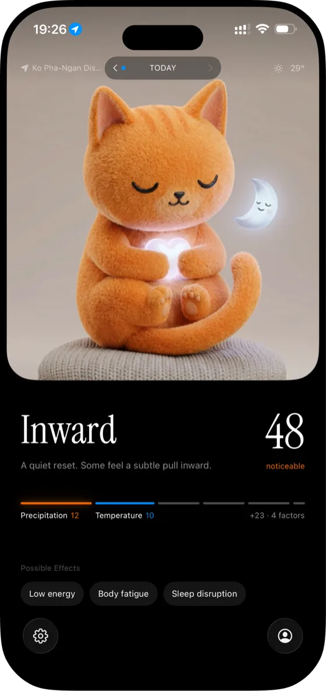
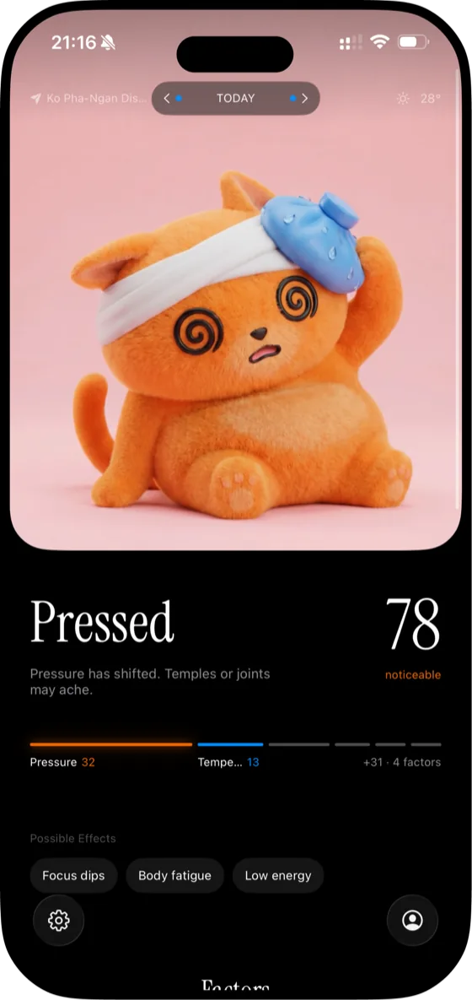
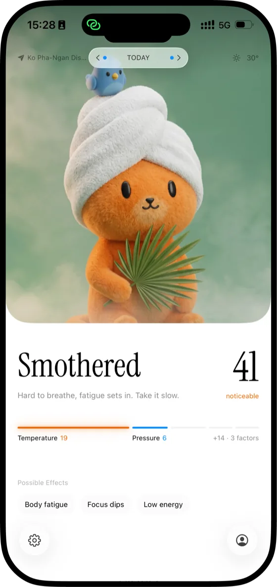

When the forecast looks fine but you don't, there may be a real reason. Meteosense turns today's environment into one read on how you might feel.
Free. iPhone, iOS 17 or later. Health & Fitness.
It scores the environmental factors most weather apps treat as just "weather", measures each one against what is normal for your area rather than against a global average, and adds them into a single load number for the day. Calm days read calm, heavy days stand out.
Every day also gets a name, its character, for example Pressed, Wired, Smothered or Settled, so an off day has a description and not only a score.
You rate how you actually felt. Meteosense compares your ratings against the factors that were active on those days and works out which ones are your personal triggers, then reweights them. Two people in the same city can end up with different reads on the same day, because they are not sensitive to the same things.
This takes real days to settle. The first weeks are the app learning you.
It is not a weather app. Weather apps tell you what the sky is doing. Meteosense estimates what the day may be doing to you, and it will call a sunny day heavy if the pressure and the geomagnetic activity say so.
It is not a medical device and not a symptom diary. It describes environmental load, not medical conditions. It does not record attacks or medication, it does not diagnose or treat anything, and it does not replace advice from a clinician.
People who notice that certain days hit them harder and cannot explain why: pressure headaches and migraine, fatigue on grey or humid days, poor sleep around a full moon, aches before a front, sensitivity to geomagnetic storms.
If you have ever been told it is all in your head, this app exists to check whether your environment had a hand in it.
Your location is rounded to roughly 11 km before anything is requested. Your rating history stays on your device. There is no account, no ads, no cross-app tracking and nothing sold. Details in the Privacy Policy.
Free to download, with full access for the first 10 days. After that today's score, your day archetype and your daily check-in stay free. An optional Premium subscription, monthly or annual, keeps the full factor breakdown, your history and your personal trigger map.
No. It flags the days when barometric and geomagnetic swings run high, so a hard day is less of a surprise, and it can warn you the night before one. Whether that turns into an attack depends on far more than the weather. It is a heads-up, not a prediction and not a medical tool.
No. Meteosense is iPhone only, iOS 17 or later. There is no Android, iPad or web version.
No. There is no sign-up, no name and no email. The app asks for your location, or you can type in a city instead.
Yes, anywhere. Each factor is scored against the climate normal for your own coordinates, so a humid day in the tropics and a humid day in a dry continental winter are not treated the same way.
Geomagnetic storms and solar flares are the part ordinary weather apps do not surface at all, and many sensitive people report reacting to them. Meteosense tracks the Kp index and flare activity alongside the atmospheric factors, so a clear, calm-looking day can still read as heavy.
Questions, feedback, or a problem with the app? Write to everyoneneedsthebreatheeasy@gmail.com. It is read by the person who made the app.